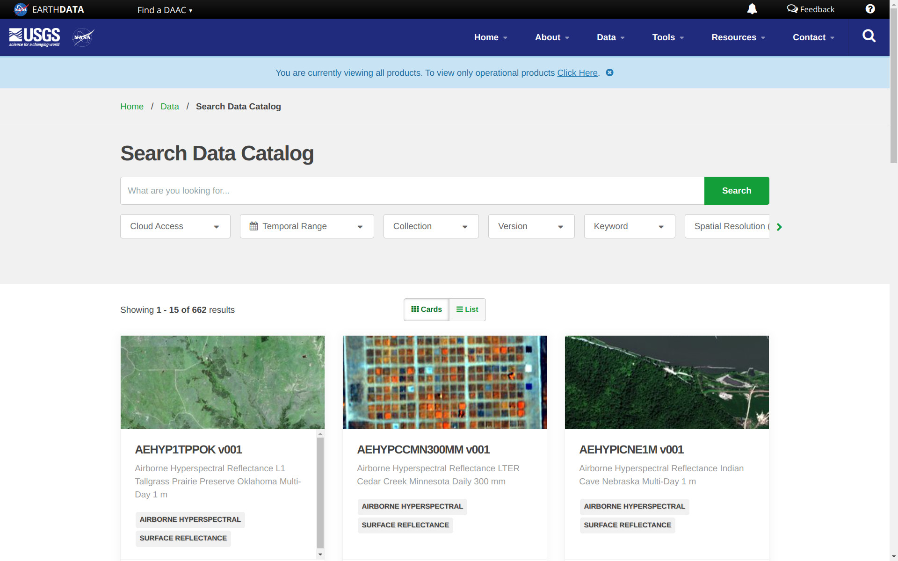

Compendium of Global Gridded Environmental Data Sets
This is an open compendium of global (gridded) environmental datasets (bio-geophysical variables). Here you can find systematic listings of published data sets (a selection of the cutting-edge datasets we plan to upload to OpenLandMap.org) with emphasis on publicly available data sets available under open data license. These reviews are periodically maintained by the www.OpenLandMap.org development team and collaborators. They are only meant to serve as general inventories of what is available, and NOT as an in-depth review article.
To contribute to this portal, consider submitting new data by editing this Markdown document. Please check also the working version of the OEMC global Land Use Land Cover Taxonomy Tables.
If your work / products are cited here, you are for us a champion of open environmental data and we are enormously thankful for your contributions (please never stop!).
Minimum conditions to include your contribution to this compendium:
- Please submit / register only global data sets (at least 80% complete; at least 5 continents);
- The data sets should be peer-reviewed or at least come with fully documented processing steps / metadata and/or an official technical report;
- Refer to computational notebooks or materials that explain how was the data produced: follow as much as possible the open science principles;
- The data set should have one of the compatible open data licenses or at least allow for the derivative works to be released as open data;
- The data set should be current i.e. still in use and the citation / URL should mention the most recent update;
- Mention of the data should focus on practical things such as “where I can read about how was this data set produced?”, “where can I download this data?”, “what are its technical characteristics such as spatial resolution, temporal coverage, biophysical variables and measurement units?”;
Here are the top 5 technical aspects of the data that should be clear to reader without confusion:
- What is the DOI of the data set i.e. what is the permanent URL from which it can be accessed and downloaded?
- What is the spatial resolution / effective scale of the data set? We recommend to avoid using abstract metrics such as “3-arcseconds” or similar but use instead round metrics e.g. “90-m spatial resolution”.
- Which referent time-period does the data set covers / what is the time-span of the training or input data?
- What is the #1 technical documentation for this data set (ideally a peer-review publication DOI or similar)?
- For which purpose can/should this data set be used and what is its significance?
Examples of contributions that will not be welcomed:
- Registering and submitting regional or local data sets i.e. covering only continents or countries;
- Mentioning, listing and/or self-promoting of proprietary / commercial data sets will not be accepted;
- Rating or criticizing data sets or expressing personal opinions;
- Deleting text submitted by others or inserting code that is computational or difficult to maintain;
You can however mention some data sets that are not open if they are without any open data / open source alternative.
Thematic data groups:
All layers are organized around the following themes (based on the UN-GGIM The Global Fundamental Geospatial Data Themes):
- Buildings and Settlements: includes administrative and socio-economic data, natural hazards and similar,
- Elevation and Depth: includes Digital Terrain Models and DEM-derived parameters, LiDAR point clouds, canopy heights, hydrological data derived from DTMs and similar,
- Geology and Soils: includes geological, surface lithology and soil property and class maps,
- Land Cover and Land Use: includes land cover / land use classes, land cover change and drivers of land use / land cover change,
- Population Distribution: includes population density and population variables, urbanization and lights at night images,
- Water: includes surface and underground water resources and similar,
- Physical Infrastructure: includes road and rail networks, dams, industrial facilities and similar,
- Climate: includes long-term climatic images, climatic time-series data, future climate predictions and meteorological images,
- Biodiversity and Nature Conservation: includes wildlife resources, protected areas, natural vegetation and biomes, ecoregions and biodiversity maps,
This list is not universal and might need to be updated and improved. For comparison, NASA’s EarthData portal distinguishes the following global data themes:
- Atmosphere;
- Biosphere;
- Cryosphere;
- Human Dimensions;
- Land Surface;
- Ocean;
- Solid Earth;
- Sun-Earth Interactions;
- Terrestrial Hydrosphere;
Other repositories of global (open) environmental layers
Sorted alphabetically:
- Amazon AWS Open EO Data;
- Copernicus Global Land Service — global data sets (bio-geophysical products) produced by the Land Monitoring Core Service (LMCS) of Copernicus, the European flagship programme on Earth Observation;
- DLR Geoportal;
- EarthEnv.org — Global, remote-sensing supported environmental layers for assessing status and trends in biodiversity, ecosystems, and climate (hosted by Yale University / NASA and others);
- ESRI ArcGIS Living Atlas of the World;
- Euro Data Cube Public Collections — a series of global data sets primarily based on the Copernicus programme / Sentinel satellites;
- FAO’s GeoNetwork — serves a diversity of data produced by FAO run or supported projects at a diversity of scales;
- Free GIS data compendium by R.T. Wilson;
- GeoPortal.org — The Global Earth Observation System of Systems (GEOSS) portal implemented and operated by the European Space Agency (typically only a catalog of data sets / no or limited data is hosted);
- Global Land and Discovery group — University of Maryland Global Land and Discovery group (GLAD) group global data sets,
- Google Earth Engine Data Catalog — Google’s repository of global and local data sets;
- MODIS Land products usually at moderate resolutions from 250-m to 1-km (also available for searching via https://lpdaac.usgs.gov/product_search/);
- NASA Earth Observation (NEO) is part of the EOS Project Science Office located at NASA Goddard Space Flight Center;
- NASA’s Earth Observing System Data and Information System (EOSDIS) provides tools to find and access global data sets produced by NASA and aiming at Earth System Science;
- Natural Earth Data website compiled by Nathaniel Vaughn (KELSO) and volunteers;
- Open Geospatial Catalogs a list of open geospatial datasets available on AWS, Earth Engine, Planetary Computer, NASA CMR, and STAC Index;
- Oracle Open Data Repository (geospatial);
- ORNL DAAC The Oak Ridge National Laboratory Distributed Active Archive Center (ORNL DAAC) for Biogeochemical Dynamics is a NASA Earth Observing System Data and Information System (EOSDIS) data center managed by the Earth Science Data and Information System (ESDIS) Project;
- Overture Maps by the Overture Maps Foundation serves some basic admin layers e.g. buildings, road networks, places etc all as open data.
- SAGE Atlas of the Biosphere portal;
- SEDAC — A Data Center in NASA’s Earth Observing System Data and Information System (EOSDIS) — Hosted by CIESIN at Columbia University;
- STAC index an international telephone book for STAC Catalogs, Collections, APIs, Software and Tools (you can also add your own data and tools to the list);
- The awesome-gee-community-catalog by Samapriya Roy et al.;
- UNEP/GRID GEO DataPortal and UNEP/GRID-Arendal — a large repository of global grids at various resolutions;
- UNEP Data Catalog;
- World Resources Institute (WRI) Resource Watch — features hundreds of data sets all in one place on the state of the planet’s resources and citizens.
- World Resources Institute (WRI) Environmental Information Portal serves a number of global grids derived by the WRI and collaborators;
Make your data more accessible more usable
If you are making open global data aiming at enabling others to do more advanced analysis & eventually help with better management of natural resources, what are the key steps to improve usability of your data? Within the Open-Earth-Monitor project we specifically looked at hundreds of cases of data sets that have a high potential but are somewhat under-used or not used at all because of poor documentation, being incomplete or requiring specialized knowledge. This is what we believe is especially important to help boost usability and accessibility of your global geospatial data:
- Aim at making your data 4C-ARCO: complete, consistent, current and correct, then on top of it Analysis-ready and Cloud Optimized (ARCO);
- Use (open) cloud-native data formats to distribute data (especially for large data) either COG’s, GeoZarr, XArray and/or Geoparquet / Flatgeobuf and similar for tabular / vector data;
- Optimize compression of the data so that data download is as fast as possible; for example, compression is by default already included in the Cloud-Optimized GeoTIFF data format;
- Use SpatioTemporal Asset Catalogs (STAC) or similar to register data and the access points (usually also requires that you publish your data via a Simple Storage Service (S3));
- Best technical documentation for the data is (A) a peer-review publication, and (B) a computational notebook providing a demo of the method used and key results; a peer-review publication increases confidence for non-experts; computational notebooks help increase quality as people then try to extend your work, then discover and report problems and help you make revisions;
- Always register all versions of your data so that anyone can track fixes and improvements; for each version try to obtain DOI, so that it is also kept for ever;
- Try to register your data in some higher level aggregator such as STAC index (or this compendium!);
- Test if your data can be easily used in most-popular GIS software such as QGIS: does it have the right legend? can users quickly find metadata, explanation of units, how was the map produced?
- Provide support and regularly update your data; like with software no data is bug-free, by updating and improving your data your user community learns to appreciate your efforts and builds higher trust;
Of course, not every version or testing of your data / mapping skills needs to be registered with unique DOI. Also, writing metadata & computational notebooks requires time and resource investments, so you need to plan carefully your time.
Here are also some world-leading providers of tools for making geospatial data more usable and more FAIR (Findable, Accessible, Interoperable, and Reusable) (unsorted):
- https://gdal.org software backbone of any open geospatial data project;
- https://radiant.earth/ is organization largely behind COGs and STAC;
- https://pangeo.io/ a project developing tools for Big Data geoscience;
- https://github.com/opengeospatial the Open Geospatial Consortium repositories hosting many open source solutions for Big Data geoscience;
- https://github.com/opengeos/ a collection of open-source software packages for the geospatial community;
- https://r-spatial.org/ and https://rspatial.org/ packages and tutorials for accessing and processing geospatial data using R;
- https://juliageo.org/ libraries for Julia language to support processing geospatial data;
Buildings and Settlements
Administrative and socio economic data
Administrative data can be used to calculate proximity-based parameters and to orient the users geographically. One publicly accessible global administrative data database is the GADM database of Global Administrative Areas. It comprises borders of countries and lower level subdivisions such as provinces and counties (more than 100,000 areas). Lower level administrative boundaries can be obtained via the FAO’s GeoNetwork server. Even more detailed is the FAO GAUL: Global Administrative Unit Layers which is available for different periods and up to the 3rd admin level, so one can potentially also track changes in political units (the table GAUL_g2015_2014_1_legend.csv contains an example of cca 3500 administrative units with codes). The geoBoundaries is a global Database of Political Administrative Boundaries and contains a snapshot of political and administrative boundaries since 2017.
An important global vector dataset is the World Vector Shoreline data set at scale 1:250,000 (Carlotto, Nebrich, and DeMichele 2017). This can be, for example, used to derive the global distance from the sea coast line map and similar.
The Overture Maps foundation provides up-to-date (current) global vectors on Layers of interest include: admins, base, buildings, places etc. You can simply download the data for are of interest, then convert to PMTiles or similar, then add to your back-end/front-end as a clickable layer.
The World Settlement Footprint (WSF) is a series of datasets that provide comprehensive, high-resolution mapping of human settlements across the globe. WSF is a 10-m resolution binary mask outlining the extent of human settlements globally derived from 2014–2015 multitemporal Landsat-8 and Sentinel-1 imagery (WFS2015) and 2019 multitemporal Sentinel-1 and Sentinel-2 imagery (WFS 2019). WSF Evolution is a 30-m resolution dataset outlining the global settlement extent on a yearly basis from 1985 to 2015.
The Socioeconomic Data and Applications Center (SEDAC) a Data Center in NASA’s Earth Observing System Data and Information System (EOSDIS) Hosted by CIESIN at Columbia University has produced a number of open global socio-economic data sets including on themes such as: Agriculture, Climate, Conservation, Governance, Hazards, Health, Infrastructure, Land Use, Marine and Coastal, Population, Poverty, Sustainability, Urban and Water.
Elevation and Depth
Digital Terrain Models
Global Shuttle Radar Topography Mission (SRTM) Digital Elevation Model is on of the most well-known global environmental dataset (Rabus et al. 2003) available with a resolution of approximately 30-m (1 arcsec). The most recent version of the SRTM DEM is the NASADEM. In 2018 two new global elevation models were produced:
- ESA’s Copernicus DEM GLO-30 at 30-m resolution;
- JAXA’s ALOS AW3D30 at 30-m resolution;
Both ALOS AW3D and GLO-30 are the new generation surface models. Both need removal of canopy and buildings before they can be used as terrain models i.e. for surface water runoff and similar. Yamazaki et al. (2019) has produced MERIT DEM and MERIT Hydro, actual DTM post-filtered and hydrologically correct DTM. Both are available for download under open data license but only at 90/100-m resolution. Using the MERIT DEM, Amatulli et al. (2020) have produced Geomorpho90m and Hydrography90m (Amatulli et al. 2022) data sets.
A complete land surface model ETOPO1 Global Relief Model (includes bathymetry data) is available at resolution of 1-km and can be obtained from the NOAA’s National Geophysical Data Center (Amante and Eakins 2009). An updated version of the ETOPO is the Global Land One-km Base Elevation Project (GLOBE) DEM. Global bathymetry data (GEBCO data set) can also obtained from the British Oceanographic Data Centre.
OpenTopography.org maintains a catalog of global elevation data sets including national data sets. A combination (Ensemble-DTM) of GLO-30, AW3D30, MERIT DEM and number of continental / national DTM’s is available via OpenLandMap.org.
Iwahashi and Pike (2007) produced a global landform type map of the world at 250-m. Geomorphological forms (Geomorphon classification system) at 100-m are also available for download via the OpenTopography.org repository and/or Zenodo. Charlie Frye and Richards (2023) produced Named Landforms of the World (NLW2) with most of data at 250-m resolution.
Canopy height data
There are several global reference point data set and products that represent canopy height (often including heights of building / human-built structures). Currently the two global public reference data sets / missions for monitoring canopy height and morphological ecosystem parameters are:
You can visually explore and download the ICESat data from https://www.openaltimetry.org. GEDI and ICESat can be used to derive number of ecosystem parameters including biomass density (above ground), canopy height, terrain height, LAI, canopy structure etc. The complete global gridded canopy height / biomass density products include:
- Global forest canopy height maps at 30-m produced by GLAD (Potapov et al. 2021);
- Global 10-m resolution canopy height map (Lang et al. 2023);
- Global 100-m resolution aboveground biomass carbon density (Spawn et al. 2020);
- GEDI L4B gridded aboveground biomass density (nominal latitude extent of -52 to 52 degrees) at 1-km resolution (Dubayah et al. 2023);
TanDEM-X 30-m DEM Change Maps (DCM) shows significant changes in elevation (usually canopy height) for the period 2016 to 2022. DLR warns that users must be aware that a given elevation change measured in the DEM change maps corresponds to a topographic change with respect to TanDEM-X 30m EDEM, i.e. this is only an estimate of physical height change.
Hydrological / hydrographic data
World river and stream networks (vector files) are available from the Global River Classification (GLORIC) DB. A rasterized version of this data set is available at resolution of 250-m. MERIT Hydro also provides Upstream Drainage Area at 100-m global and should be considered a reference at this scale (Yamazaki et al. 2019). Amatulli et al. (2022) describes Hydrography90m (global hydrographic dataset) although this is not available as open data (authors used the NC-license).
Global reservoirs (GRanD) (polygons) dataset can be obtained from the Global Dam Watch website. Connected to GRanD, Global reservoir bathymetry estimate (ReGeom) dataset is available from zenodo. Global streamflow time series dataset i.e. the GRDC’s (Global Runoff Data Centre) streamflow observations (cca 11,000 stations) can be downloaded from the GRDC data portal.
Lehner and Grill (2013) provide a global river hydrography and river network routing data set (HydroBASINS and HydroSHEDS) at 500-m spatial resolution. Lane et al. (2023) produced a global 90-m resolution map of Non-Floodplain Wetland (Global NFW). Global NFW is based on multiple input data sources including MERIT Hydro, HydroBASINS and similar.
Several data set exists that quantify global surface water extent and type, wetlands distribution and fresh-water resources in general:
- JRC’s global surface water dynamics data set at 30-m: this includes occurrence probability of surface water, surface water extent and change 1984–2021 (Pekel et al. 2016);
- GLAD’s global surface water dynamics 1999–2021 at 30-m resolution providing also map of 7 types of surface water stable and change dynamics (Pickens et al. 2020);
- Multi-source global wetland map at 500-m resolution (Tootchi, Jost, and Ducharne 2019)
DLR’s (MODIS-based) Global WaterPack (GWP) monthly and yearly product (different water coverage categories) at 250-m spatial resolution is available for the period 2003 to 2022+.
NASA’s Physical Oceanography Distributed Active Archive Center (PO.DAAC) serves data on ocean winds, sea surface temperature, ocean surface topography, sea surface salinity, surface water and similar.
Geology and Soils
Geology and lithology
The current global geological map approved by the Commission for the Geological Map of the World is the 1:25M Geological Map of the World (maps not available publicly). The world geological maps are now being integrated via the OneGeology project which aims at producing a consistent Geological map of the world in approximate scale 1:1M (Jackson 2010); progress can be followed via the interactive OneGeology portal.
USGS has several data portals, e.g. that allow browsing of the International Surface Geology (split into South Asia, South America, Iran, Gulf of Mexico, Former Soviet Union, Europe, Carribean, Bangladesh, Asia Pacific, Artic, Arabian Peninsula, Africa and Afganistan). Hartmann and Moosdorf (2012) have assembled a global, purely lithological database called GLiM (Global Lithological Map). GLiM consists of over 1.25 million digital polygons with classified in three levels (a total of 42 rock-type classes).
USGS, jointly with ESRI, have released in 2014 a Global Ecological Land Units map at 250-m resolution. This also includes a world layer of rock types. The data can be downloaded from the USGS site or via Zenodo.
Fan, Li, and Miguez-Macho (2013) produced global maps of Groundwater Table Depth that has been systematically updated in 2022. The modeled monthly water table depth can be downloaded for each continent. Cuthbert et al. (2019) produced water table ratio and groundwater response times maps at 1-km resolution (available from figshare). The International Groundwater Resources Assessment Centre (IGRAC) maintains the Global Groundwater Information System (GGIS). IGRAC is aiming at producing global groundwater datasets.
Tang and Werner (2023) made a global inventory (polygon map) of mining areas (global mine area coverage): The polygons cover about about 66,000 km-square of features like waste rock dumps, pits, water ponds, tailings dams, heap leach pads and processing/milling infrastructure. The data is available from zenodo. An update of the global mining areas (three layers: mining polygons, mining centroids, mining area per grid cell) is provided by Maus et al. (2022); the data set is available via PANGAEA; also available via https://fineprint.global/viewer.
Earthquakes / natural hazards
Natural hazards include:
- Earthquakes,
- Volcanoes,
- Landslides,
- Famines & Droughts,
- Hurricanes, Tornados, and Cyclones,
- Extreme precipitation and flooding,
- Extreme Temperature (Heat & Cold),
- Wildfires,
A number of institutions have jointly produced a Global Seismic Hazard map (Shedlock et al. 2000). This map, although slightly outdated and of limited detail, can be obtained directly from the GSHAP project webite. From the NOAA’s National Geophysical Data Center one can obtain a point map with all major earth quakes (Significant Earthquake Database; cca 5000 quakes), and generate a (kernel density) map for Earthquake magnitude.
University of Hawaii maintains a Global Hazards Information Network, which contains a number of global layers including a map of Global Airports, locations of significant earthquakes and earthquake zones.
Copernicus Global Land Service distributes a global assessment of Burnt Area at 300-m spatial resolution, but available only from 2019 onwards. NASA’s FIRMS (Fire Information for Resource Management System) provides real-time access to occurrence of fires including access to the archive data. The Global Fire Emissions Database provides maps of individual fire size, duration, speed, and direction at relatively coarse spatial resolutions of (10–25 km), but ranging from 1979 to present times (Andela et al. 2019). NASA’s Global Hydrometeorology Resource Center Distributed Active Archive Center (GHRC DAAC) serves global data on lightning, tropical cyclones, and storm-induced hazards through integrated collections of satellite, airborne, and in-situ data sets.
NOAA’s Global Drought Information System (GDIS) serves global estimates of drought conditions. Maps are usually only available at coarse resolution of 25, 10 or 5-km or similar.
Soils
Soil maps (physical, chemical, biological soil properties and soil classes) are especially important for spatial prediction of distribution of vegetation and (plant) species distribution. FAO, IIASA, ISRIC, ISSCAS, JRC have produced in 2007 a 1-km resolution gridded soil-class map, produced by merging various national soil maps. This product is also known as the Harmonized World Soil Database. Global predicted WRB soil type maps at 1-km can be download as geotifs from here. USGS / USDA have produced a map of Global Soil Regions map at resolution of 60 arcsec, and which is based on the FAO-UNESCO soil map.
A list of seven gridded soil property maps (at resolution of 5 arc-minutes i.e. about 10-km) — soil-carbon density, total nitrogen density, field capacity, wilting point, profile available water capacity, thermal capacity, and bulk density — is available via the International Geosphere-Biosphere Program Data and Information System (IGBP-DIS) data set. Some additional soil property maps such as pH and soil moisture, can be also obtained from the Atlas of Biosphere project. Global Soil Dataset for Earth System Model (GSDE) contains the largest number of soil properties (gridded) at 1-km spatial resolution (Shangguan et al. 2014).
FAO’s Global Soil Partnership has produced a Global Soil Organic Carbon Map (GSOCmap) at 1-km resolution. ISRIC — World Soil Information maintains a global soil profile database (WoSIS) with over 100,000 profiles and over 50 analytical and descriptive parameters (Batjes, Ribeiro, and Van Oostrum 2020). Predictions of soil properties (GeoTIFFs) at spatial resolution of 250-m or better are available from multiple sources including:
- SoilGrids (Poggio et al. 2021);
- OpenLandMap.org soil properties and classes;
- HiHydroSoil: Global Maps of Soil Hydraulic Properties (available upon request or directly via GEE);
Crowther’s lab distributes a number of soil-biology global data sets (1-km) including maps of soil nematodes density, bacterial biomass, fungal biomass and similar.
Some soil properties are often directly estimated from the EO data. For example the soil moisture GLASS SM data set and the gap-free global daily surface soil moisture at 1-km grid resolution. Bare soil surface fraction and bare soil spectral bands can be also derived directly from EO data e.g. global composites produced Demattê et al. (2020); data available via GEE.
Lembrechts et al. (2022) produced maps of Global Soil Bioclimatic variables (including soil temperatures) which are available at 1-km spatial resolution for depth intervals 0–5 and 5–15 cm (training data used to produce these maps is also available). Pelletier et al. (2016) produced a Gridded Thickness of Soil, Regolith, and Sedimentary Deposit Layers.
An in-depth review of the global soil data sets is available in Dai et al. (2019). Status of the soil information in the world can be also followed via David G. Rossiter’s compendium of On-Line Soil Survey Information.
Land Cover and Land Use
Land cover
Land cover maps show distribution of above-surface cover in general categories and are used primarily for spatial planning and modeling. Ground truth observations of land cover can be obtained from multiple sources e.g. the geo-wiki.org project (Fritz et al. 2017), FROM-GLC (Gong et al. 2019); the most comprehensive recent global training data sets for land cover mapping to date (cca 2M training points covering from years 1984 to 2020) is provided by the Global Land Cover Estimation (GLanCE) project project (Stanimirova et al. 2023). Shi et al. (2023) have produced Globe230k: a benchmark dataset for Global Land Cover Mapping which includes cca 230,000 annotated images with a size of 512 × 512 and a spatial resolution of 1-m.
Land cover maps are commonly derived using semi-automated methods and remote sensing images as the main inputs. Global land cover / land cover change maps are today primarily derived from the Sentinel-2 and Landsat imagery. For example, the GlobalForestWatch.org imagery showing deforestation/reforestation were derived from the 30 m resolution Landsat images (Hansen et al. 2013). The global Analysis-Ready Landsat mosaics (Landsat-ARD) are available for download as harmonized scenes from the University of Maryland GLAD (Global Land and Discovery group) (Potapov et al. 2020), but these datasets are significant in size and hence require significant processing facilities.
Current publicly available global land cover and/or land use maps include (L. Liu et al. 2021):
- GLASS-GLC is global land cover time-series 1982 to 2015 at 5-km resolution derived directly in Google Earth Engine (H. Liu et al. 2020).
- MCD12Q1 Land Cover Type Yearly L3 Global product available in resolution from 500-km. MODIS Land cover maps (17 land cover classes based on the International Geosphere Biosphere Programme IGBP classification system) is a temporal dataset so that one can also derive various change indices and quantify the land cover dynamics.
- ESA CCI Land cover is a global land cover time series from 1992 to 2020+ derived at 300-m spatial resolution from MERIS, SPOT and PROBA-V imagery. Maps can be accessed through a viewer and downloaded from the ESA website or from zenodo.org (Defourny et al. 2012).
- Copernicus Global Land Cover products at 100-m for years 2015, 2016, 2017 and 2018 and based on the PROBA-V imagery (Buchhorn et al. 2020). The maps which can be downloaded directly from zenodo.org. These maps contain also predicted fractions for the main land cover classes (per pixel).
- GLAD Global Land Cover and Land Use Change 2000–2020 (GLCLUC2020) provides estimate of the land cover for the last 20+ years but also quantifies changes in forest extent and height, cropland, built-up lands, surface water, and perennial snow and ice extent (Potapov et al. 2022).
- GLC FCS30D is a global 30-m annual land-cover time-series data set with 17-class system for the period 1982–2021 (X. Zhang et al. 2021).
HYDE (History database of the Global Environment) contains historic (estimated) maps (10-km resolution) of main land use categories up to pre-historic times 10,000 BCE to CE 2020 (Klein Goldewijk et al. 2017). HYDE includes irrigated areas, rice, intensive pasture, extensive rangelands and similar. Data can be downloaded from the University of Utrecht Copernicus Land Change Lab.
A detailed Water mask of the world is available also from the Global Surface Water Explorer hosted by European Commission JRC (Pekel et al. 2016). A Landsat-based water dynamics assessment (annual maps) at 30-m is also provided by Pickens et al. (2020). Global WaterPack (GWP) monthly and yearly product comprises different water coverage categories at 250-m spatial resolution.
Due to the availability of the Sentinel-2 10-m resolution data, several land cover products are now available at very high resolution (but then only covering recent 3–5 years). These include:
- Google Dynamic World at 10-m, limited to 9 classes but constantly updated (Brown et al. 2022);
- ESA World Cover at 10-m based on Sentinel-1 and Sentinel-2 data for 2020 and 2021 available from Zenodo;
- Global canopy top height map for the year 2020 at 10-m (Lang et al. 2023);
Several initiatives aim at integrating multiple land cover products (Herold et al. 2016) and/or running land cover classification by fusing multisource EO data (Xiao-Peng Song and Townshend 2017; L. Liu et al. 2021).
ESA’s WorldCereal provides access to high resolution predictions (10-m) of winter and spring cereals, maize, active cropland, irrigation and similar for year 2021 (Van Tricht et al. 2023).
Biophysical indices
There are number of biophysical indices including vegetation indices that can be derivd from optical EO images such as MODIS, Landsat and/or Sentinel. This includes (note: formulas for biophysical indices for MODIS, Landsat etc might differ):
- Bare Soil Fraction (BSF),
- Enhanced Vegetation Index (EVI),
- Fraction of Absorbed Photosynthetically Active Radiation (FAPAR),
- Leaf Area Index (LAI),
- Normalized Burn Ratio (NBR),
- Normalized Difference Snow Index (NDSI),
- Normalized Difference Tillage Index (NDTI),
- Normalized Difference Vegetation Index (NDVI),
- Normalized Difference Water Index (NDWI),
8-day, monthly and annual biophysical indiced such as EVI and Gross and Net Primary Production (GPP and NPP) from MODIS (250-m) are available via the MOD13Q1 and MOD17A2H products. These, however, often come with many missing pixels due to clouds and artifacts and require significant post-processing to reach a complete consistent structured product. Global GPP at 300-m spatial resolution is also available based on the Sentinel-3/OLCI, but covering only recent years (>2023).
Ma et al. (2022) produced global consistent 8-day Fraction of Absorbed Photosynthetically Active Radiation (FAPAR) product at 250-m spatial resolution (available for download from Zenodo). Xiong et al. (2023) produced an improved global consistent and complete 8-day 250-m NDVI and EVI products covering 2000 to 2021 (data is available for download from Figshare). Global LAnd Surface Satellite (GLASS) serves a number of post-processed products including FAPAR and Leaf Area Index (LAI) at 250-m and also covering period 2000 to 2021. Based on the Ma et al. (2022), Hackländer et al. (2024) produced an aggregated complete & consistent monthly FAPAR product which also includes P25, P50 and P75 quantiles.
Global cloud-free Landsat composites (Red, NIR, SWIR1, SWIR2) for the world for multiple periods (2000, 2014, 2018, 2022) can be obtained from GLAD Global Forest Change.
Forest resources
FAO periodically (every 5 years) organizes the so called Forest Resources Assessment (FRA) — an international compilation of forest resource assessment (forest maps, health and vitality status, forest functions and policies connected with forest management). This assessment typically results in a comprehensive report that includes both graphical and tabular data; gridded global FRA maps are typically not available.
The Land Processes Distributed Active Archive Center (LP DAAC) archives and distributes Global Forest Cover Change (GFCC) data product at 30-m resolution. Japan Aerospace Exploration Agency (JAXA) has also released in 2014 a global 25-m resolution PALSAR mosaic and forest/non-forest map (2007–2010 and 2015–2021). This data is freely available for download via the JAXA pages. Copernicus Global Land Cover and Tropical Forest Mapping and Monitoring service (LCFM) serves 10-m resolution sub-annual maps of tropical forest status.
Detail maps of mangrove forests cover, habitat type and properties (Bunting et al. 2022), the key products of the https://www.globalmangrovewatch.org/ project can be obtained from zenodo. Vancutsem et al. (2021) produced long-term (1990–2019) maps of forest cover changes in the humid tropics (Tropical moist forests TMF) at 30-m spatial resolution. The data is available for download via the project homepage.
Forest resources and canopy height have been mapped by the GLAD group from the Maryland university (Potapov et al. 2021) The data is publicly available under open data license from: https://glad.umd.edu/dataset. The WRI’s Global Forest Watch service can be used to access annual tree cover maps for 2000–2022+, forest cover change and canopy height change (Hansen et al. 2013). These global forest change data is openly available and can be downloaded including the Landsat cloud-free mosaics for the whole world at 30-m resolution.
Note that tree cover loss can be permanent (e.g. change in land use, permanent deforestation, or natural transition i.e. ecological succession) or can be temporary i.e. effect of fires, floods, pests and similar), therefore it is important to consider any forest inventory data within time-frame, previous state and considering succession rates.
Land use change
Land use change often comes with a special legend and should not be confused with land cover mapping. Some typical legend entries for land use change includes:
- Deforestation,
- Reforestation,
- Urbanization,
- Loss of wetlands,
- Wetland degradation,
- Water reduction (surface water change),
- Water expansion (surface water change),
- Desertification,
- Crop expansion,
- Pastureland expansion,
- Land abandonment,
GLAD Global Land Cover and Land Use Change 2000–2020 (GLCLUC2020) provides estimate of the land cover for the last 20+ years at 30-m resolution quantifies changes in forest extent and height, cropland, built-up lands, surface water, and perennial snow and ice extent (Potapov et al. 2022). This data set can be downloaded (per tile) via the GLAD’s GEE repository. WRI’s Global Forest Watch provides high resolution
forest cover change at 30-m resolution. TanDEM-X 30-m DEM Change Maps (DCM) shows significant changes in elevation (usually canopy height) for the period 2016 to 2022.
Population Distribution
Population density maps
For global modeling one of the most important global socio-economic data layers are the population density maps and attached socio-economic variables. The Socioeconomic Data and Applications Center (SEDAC) distributes the Global Population Density Grid Time Series Estimates (1970–2000), Global Rural-Urban Mapping Project data set, Version 1 (GRUMPv1) and Gridded Population of the World, Version 4 (GPWv4) all at resolution of up to 1-km. These are the currently most detailed gridded time-series dataset with consistent population density and structure; for modeling future, a Global 1-km Downscaled Population Base Year and Projection Grids Based on the SSPs (1990–2100) (J. Gao 2020) is also available. It consists of global urban, rural, and total population for the base year 2000, population projections at ten-year intervals for 2010–2100 at a resolution of 1-km, and was developed for the purpose of the IPCC climate modeling framework.
Joint Research Centre (JRC) of the European Commission has produced a global 100-m spatial resolution product called Global Human Settlement (GHS) population grid multitemporal (1975-2030) layer (Schiavina et al. 2022). This can be considered the most detailed global population density product to date and is also available via OpenLandMap.org.
Facebook (Meta) through its not-for-profit project “Data for Good” is building a series of cutting-edge population data sets including the population density maps at 30-m (also includes age structure and gender). These are usually based on a combination of legacy population data from censuses and EO products / inventory of buildings etc that are then used to downscale the values to high spatial resolution (Tiecke et al. 2017). The 30-m resolution population density maps for 160+ countries and territories around the world are available for download from https://portal.mwater.co/.
Lights at night images
The lights at night map contains the lights from cities, towns, and other sites with persistent lighting, including gas flares. Images of lights at night have shown to be highly correlated with industrial activity and Gross Domestic Product (Doll, Muller, and Morley 2006). A time-series of (1-km resolution) annual global night light images (1992–2013) is available via the NOAA’s National Geophysical Data Center the Version 4 DMSP-OLS Nighttime Lights Time Series. The harmonized nighttime light (NTL) time-series composites for 1992–2020 produced by Zhao et al. (2022) are available at 1-km resolution.
Currently the most detailed global Lights at night images are the global VIIRS nighttime lights (Annual VNL V2) covering 2012–2020 at 500-m spatial resolution (Elvidge et al. 2021). The Annual VNL V2 contains average, average-masked, mean, minimum and maximum values of nighttime lights. The lights at night images on OpenLandMap.org are based on time-extrapolated values so that they cover 2000–2022 and are hence compatible with other global land products.
Water resources
Global Surface Water dynamics
Global surface water dynamics can be followed from three global data sets:
- Global Surface Water Explorer 1985 to 2018 hosted by European Commission JRC (Pekel et al. 2016);
- Landsat-based water dynamics at 30-m for 1999 to 2018 period by Pickens et al. (2020).
- GLC FCS30D a global 30-m annual land-cover time-series data set with 17-class system (also includes oceans, sees and fresh-water resources) for the period 1982–2021 (X. Zhang et al. 2021).
A MODIS-based water mask (MOD44WV) product at somewhat coarser resolution (250-m) can be also used to represent water dynamics for the last 25 years.
World oceans
World Ocean Database (world’s largest collection of uniformly formatted, quality controlled, publicly available ocean profile data) is distributed by NOAA. The data set covers 1990 to 2021 period. MODIS distributes a number of global products for global oceans including sea surface temperature (SST) at 4-km resolution (daily, 8-day, monthly or annual) and similar (SST images are available for download from https://opendata.oraclecloud.com/).
The Global Fishing Watch (founded by Oceana, SkyTruth and Google) hosts a Global data set of industrial activities at sea. This includes 53 billion vessel GPS positions and results of classification of over 67 million image tiles (SAR, Sentinel-1, Sentinel-2) (Paolo et al. 2024). The GFW is currently maintaining the Open Ocean Project that aims at providing a total inventory of Industrial fishing vessels, non-fishing vessels, fixed infrastructure and small-scale fishing boats all as open data.
Haigh et al. (2023) describes the GESLA (Global Extreme Sea Level Analysis) that contains high-frequency sea-level information from tide gauge stations distributed worldwide. Global maps of the sea level change are also available for download from the University of Hawaii Sea level center.
Physical Infrastructure
Urbanization / human-induced changes
Quantification of urbanization and human impact is usually modeled by using population density maps, lights at night images and/or data on buildings. Partners in the GLOBIO consortium created a World Map of Human Impacts on the Biosphere for various time periods. This is basically a map showing a current status of the roads, railways and settlement density. Human impact maps can be also browsed via the UNEP Grid Arendal. Daniel J. Weiss et al. (2018) and D. J. Weiss et al. (2020) have produced a global map of accessibility and optimal travel time to healthcare.
The International Biosphere-Geosphere Programme, the Stockholm Environment Institute, the Stockholm Resilience Center, the CSIRO in Australia and the International Human Dimensions Programme on Global Environmental Change are producing an outreach project on the Anthropocene and planetary boundaries named “Globaia”.
Theobald et al. (2020) provides a global time-series data set representing Global human modification for 1990, 2000, 2010, 2015, and 2017 and at 300-m spatial resolution. The Wildlife Conservation Society is hosting Human Impact Index (HII) and Human Footprint maps that can be directly downloaded (Sanderson et al. 2022).
The Copernicus Sentinel-5P has produced number of monthly emission products at 2-km that can be used to quantify and monitor (industrial, traffic) emissions of NOx, CO/methane and SO2. The gap-filled monthly values of NOx and methane emissions are available in OpenLandMap.org.
A comprehensive global assessment of the human impacts to marine ecosystems can be followed via the work of the National Center for Ecological Analysis and Synthesis in Santa Barbara. This group have produced a Global Map of Human Impacts to Marine Ecosystems by using a number of connected input GIS layers (Halpern et al. 2008), which are available for download. Distribution of global airports and flight routes can be freely accessed from the openflights.org. Chris Harrison produced the world map of internet connectivity and traffic.
Climate TRACE provides an inventory of major source of greenhouse gas (GHG) emissions around the world and provides independently produced estimates of how much each emits. These data is available publicly, but requires pre-processing as it is a combination of point and polygon sources.
Intact forest landscapes
An important global forest landscape coverage / wildlife datasets is the world map of intact forest landscapes (IFL) (areas hardly touched by mankind) at scale 1:1,000,000 (includes four classes of intact forests: 1. intact closed forests; 2. intact open forests, 3. woodlands and savannas, closed forests; and 4. open forests, woodlands and savannas). IFL is maintained by the Greenpeace organization (Potapov et al. 2008) and is available for years 2000, 2013, 2016, and 2020. Another similar data set is the World Wilderness Areas and which is distributed via the UNEP GEO Data Portal (McCloskey and Spalding 1989).
The Global Generalized Original and Current Forest Cover dataset (V 3.0; polygon map) produced by UNEP-WCMC shows where were forest in past (assumed) and can be used to quantify deforestation at global scale.
Climate
Climatic datasets
Copernicus makes a difference between three groups of climatic data sets:
- Station / point data sets;
- Gridded data sets derived from modeling / reanalysis (current and past climate);
- Projected gridded predictions / seasonal forecasting of future climate;
Key climatic variables of interest are usually:
- minimum temperature (°C),
- maximum temperature (°C),
- average temperature (°C),
- precipitation (mm),
- solar radiation (kJ m-2 day-1),
- wind speed (m s-1),
- water vapor pressure (kPa),
- probability of occurrence of snow,
- snow thickness,
- soil moisture,
- water vapor (cm liquid water),
The key public gridded global climatic data sets (current and past climate) include:
- CHELSA Climate with multiple long term, monthly and even daily global products at 1-km (Karger and Zimmermann 2019);
- WorldClim with monthly historic and projected climatic data at 1-km spatial resolution (Fick and Hijmans 2017);
- TerraClimate gridded monthly temperature, precipitation, and other water balance variables at 4-km spatial resolution (Abatzoglou et al. 2018);
- NASA’s NEO global climatic monthly images at 10-km covering 2000–2022+ or finer;
- Copernicus ERA5 available from 1940 providing hourly data on many atmospheric, land-surface and sea-state parameters together with estimates of uncertainty but at a coarse spatial resolution of cca 25-km;
In addition to basic climatic variables, WorldClim and CHELSA Climate also provide BioClimatic variables at 1-km spatial resolution e.g. frost change frequency (fcf), snow cover days (scd), potential net primary productivity (npp), growing degree days (gdd), growing season characteristics and similar (Brun et al. 2022). From the sources listed above, CHELSA Climate is possibly the most comprehensive most up-to-date repository with global 1-km data and even includes daily global 1km products (CHELSA-W5E5), e.g. daily precipitation images (Karger et al. 2021).
More detailed climatic images can be obtained via the Global Energy and Water Cycle Experiment project and the British Atmospheric Data Centre (BADC). The National Center for Atmospheric Research maintains a ClimateDataGuide portal.
The National Geophysical Data Centre (NGDC) provides free access to numerous remote sensing based global maps — from solar parameters to cloud imagery, energetic particle measurements and similar (collectively called “Climate monitoring” products). The National Snow and Ice Data Center maintains a number of global data sets important for monitoring global snow and ice — frozen ground maps, monthly satellite-derived snow water equivalent (SWE) climatologies and similar. These data can be obtained for northern and southern hemisphere at resolution of 25-km. Gruber (2012) produced a Global Permafrost Zonation Index Map (excluding Antartica) which is available at resolution of 1-km. NASA’s VIIRS (Visible Infrared Imaging Radiometer Suite) Land products include also VIIRS-land snow cover daily (gap-filled) at 375-m resolution. These can be downloaded from the NSIDC data portal. ESA CCI (Climate Change Initiative) also maintains and distributes Daily Snow Cover Fraction Viewable (SCFV), Daily Snow Cover Fraction on Ground (SCFG) i.e. a canopy corrected snow fraction to adjust for snow on ground also in forested areas (both at 1-km resolution and covering 2000–2020), and Snow Water Equivalent (SWE) at 10-km resolution covering 1979–2020.
DLR (German Space Agency) Geoportal distributes the Global SnowPack monthly and annual products at 500-m spatial resolution covering 2000 to 2023 (current) (Dietz, Kuenzer, and Dech 2015). NASA’s National Snow and Ice Data Center (NSIDC) Distributed Active Archive Center (DAAC) provides data and information for snow and ice processes, interactions among snow, ice, atmosphere, and ocean.
Cui et al. (2021) have produced 1-km resolution maps of present-time and future Koppen-Geiger climate classification zones and bioclimatic variables, available for download from http://glass.umd.edu/KGClim. The Koppen-Geiger climate classification is is one of the most widely used climate classification systems with five main classes: A (tropical), B (arid), C (temperate), D (continental), and E (polar).
There are multiple daily and monthly global soil moisture products either purely based on EO images or a combination of downscaling and modeling. Fang et al. (2022) produced 1-km soil moisture data set covering years 2015 to 2020 by downscaling the SMAP product. National Snow and Ice Data Center has also produced SMAP-Derived 1-km Downscaled Surface Soil Moisture Product. This data set is available for download from NSIDC. Han et al. (2023) produced a global daily soil moisture data set at 1-km resolution called GSSM1-km covering period 2000–2020. The GSSM1-km dataset can be downloaded from Figshare. Y. Zhang et al. (2023) used ensemble learning to produce a daily 1-km spatiotemporally continuous soil moisture product for 2000–2020 called GLASS SM. The GLASS SM is freely available at http://glass.umd.edu/soil_moisture/; the annual average global soil moisture dataset at 1-km resolution was also generated, which can be downloaded from zenodo. Zheng, Jia, and Zhao (2023) produced a gap-free global daily surface soil moisture at 1-km grid resolution for 2000–2020, which is available for download from the National Tibetan Plateau/Third Pole Environment Data Center (almost 1TB of data).
Coarser resolution (10-km or coarser) soil moisture global images are also available such as the ESA’s CCI soil moisture product, SMAP Enhanced L3 Radiometer Global Daily 9 km EASE-Grid Soil Moisture and the ASCAT Soil Wetness Profile Index and Root Zone Soil Moisture Profile Index.
Global soil temperatures i.e. Global Soil Bioclimatic variables are available at 1-km spatial resolution thanks to Lembrechts et al. (2022).
OpenLandMap.org provides access to number of original climatic data sets produced at OpenGeoHub including:
- Long-term MODIS Land Surface Temperature (LST) monthly daytime and nightime images at 1-km resolution for 2000–2022;
- Global monthly water vapor at 1-km resolution for 2000–2022 based on MCD19A2;
- Global MODIS-based snow cover monthly long-term at 500-km resolution for 2000–2012;
- SM2RAIN global precipitation daily and monthly at 10-km resolution;
Meteorological images
A number of MODIS atmospheric / terrestrial products are available with daily updates (usually at 1-km spatial resolution) including:
- Daily daytime and nightime Land Surface Temperature (LST);
- Daily cloud products such as cloud thickness and temperatures (Platnick et al. 2003);
- Daily Total Precipitable Water / water vapor (B.-C. Gao and Kaufman 2003);
MODIS produces daily estimates of the global Land Surface Temperature, which are supposedly highly accurate with an average accuracy of ±1 degree Kelvin (Wan et al. 2004).
The Meteosat Second Generation (MSG) satellites (from Meteosat-8 onwards) produce SEVIRI 15–minutes images at resolution of 1-km. The most interesting SEVIRI data set for environmental applications is the High Rate SEVIRI, which consists of 12 spectral channels including: visible and near infrared light, water vapor band, carbon dioxide and ozone bands. Meteosat LST products are available from the Copernicus Global Land Service.
LSTM (Land Surface Temperature Monitoring) is an ESA mission developed by Airbus Defense and Space, set to start in 2028. The satellite will have Thermal Infrared (TIR) observation capabilities at high spatial resolution (30–50-m) over land and coastal regions in support of agriculture management services, and possibly a range of additional services.
Biodiversity and Nature Conservation
World ecosystems / biomes / ecoregions
Numerous global data products have been produced to show either boundaries of natural ecosystems also referred to as ecoregions or biomes. Ecoregions are terrestrial, freshwater and/or marine areas with characteristic combinations of soil and landform that characterize that region. Leading providers of the global maps on biodiversity and nature conservation include:
- TNC’s Atlas of global conservation;
- UNEP’s World Atlas of Biodiversity (book);
- Nature Map Earth project;
The World Wildlife Fund has produced the global (polygon) map of Terrestrial ecoregions, which shows some 867 distinct eco-units, including the relative richness of terrestrial species by ecoregion (Olson et al. 2001). Another similar data set is the Freshwater Ecoregions of the World (Abell et al. 2008).
USGS distributes a “World Ecological Land Units” with 3,923 terrestrial ecological land units (ELUs) at a base resolution of 250 meters and available for download from the USGS Global Ecosystems Data repository. Sayre et al. (2019) also produced a 30-m resolution global shoreline vector and associated global islands database for the development of standardized ecological coastal units.
FAO and IIASA maintain also a global map of Global Agro-Ecological Zones (GAEZ). GAEZ classification, soil suitability, terrain slopes and land cover are provided at 1-km spatial resolution. The GAEZ data viewer provides easy access to all data layers.
Jung et al. (2020) have produced a global map of terrestrial habitat types at 1-km spatial resolution. This is based on the International Union for Conservation of Nature (IUCN) habitat classification scheme.
The ESA’s CCI Global Plant Functional Types (PFT) data provides yearly data for the time period from 1992 to 2020. PTF global dataset has 14 layers, each describing the percentage cover (0–100%) of a plant functional type at a spatial resolution of 300-m: broadleaved evergreen trees, broadleaved deciduous trees, needleleaved evergreen trees, needleleaved deciduous trees, broadleaved evergreen shrubs, broadleaved deciduous shrubs, needleleaved evergreen shrubs, needleleaved deciduous shrubs, natural grasses, herbaceous cropland (i.e., managed grasses), built, water, bare areas, and snow and ice.
Potential Natural Vegetation maps
Potential Natural Vegetation (PNV) is the hypothetical vegetation cover that would be present if the vegetation were in equilibrium with environmental controls, including climatic factors and disturbance, and not subject to human management. When considering PNV, one needs to distinguish between potential natural and potential managed vegetation, and actual natural and actual managed vegetation (Hengl et al. 2018).

Griscom et al. (2017) produced the Global Reforestation Potential Map at 1-km resolution. Bastin et al. (2019) produced Potential forest cover map at 1-km resolution assuming no humans present. Potential distribution of LCCS land cover classes at 250-m spatial resolution based on the UN FAO Land Cover Classification System (LCCS) is part of the NatureMap project. Bonannella et al. (2023) provides an updated predictions of the potential distribution of global biomes at 1-km including for the future climate scenarios (2040, 2060 and beyond).
Species distribution and biodiversity maps
Global Biodiversity Information Facility (GBIF) provides access to global data showing the distribution of all flora and fauna species. The density maps are available only at resolution of 1 arcdegree (about 100-km) and often without any bias-correction. Global maps of biodiversity measures for various groups of taxa (e.g. vascular plants, birds and mammals) can be browsed using the Global Ecosystem Atlas. Similar type of maps can be browsed via the UNEP’s World Conservation Monitoring Centre.
A shape file showing location of hotspot regions is distributed by the Conservation International. Kreft and Jetz (2007) produced a global map of plant species diversity (number of plant species) by using field records from 1,032 locations (maps are available only in coarse resolution of 120-km). BirdLife International publishes a number of global maps indicating Endemic and Important Bird Areas (EBAs and IBAs).
Pimm et al. (2014) produced maps of species richness for mammals, birds, amphibians and other taxa at 10-km spatial resolution. EarthMap project produced a species richness (number of species per grid cell) maps for amphibians, birds, mammals, reptiles and a representative set of plant taxa whose distribution overlaps in each 10-km cell, and a global map of Areas of global significance for conservation (Brooks et al. 2019).
Sabatini et al. (2022) produced a number of global biodiversity maps including the map of plant species richness at 1-km spatial resolutions. These maps are based using sPlot database (whichs is available upon request by submitting a project proposal to sPlot’s Steering Committee). Auamaps serves standardized distribution maps (at a coarse spatial resolution) for over 33,500 species of fishes, marine mammals and invertebrates, based on the FishBase and SeaLifeBase data (Hodapp et al. 2023). Species distribution maps can be also accessed from the Ocean Biodiversity Information System (Moudrỳ and Devillers 2020).
Protected areas
National and international protected sites and attributes can be downloaded (ESRI Shapefiles; after registering on the website) via the World Database On Protected Areas. International Union for Conservation of Nature and Natural Resources (IUCN) has released a Red List of Threatened Species that contains assessments for +130,000 species. Distribution maps (presence) for these species (with limited coverage) can be downloaded from the IUCN website.
Neugarten et al. (2023) produced maps of planet’s critical areas for biodiversity and people at 2-km resolution. This finding supports recent commitments by national governments under the Global Biodiversity Framework to conserve at least 30% of global lands and waters, and proposals to conserve “half Earth”.
References
Abatzoglou, John T, Solomon Z Dobrowski, Sean A Parks, and Katherine C Hegewisch. 2018. “TerraClimate, a High-Resolution Global Dataset of Monthly Climate and Climatic Water Balance from 1958–2015.” Scientific Data 5 (1): 1–12. https://doi.org/10.1038/sdata.2017.191.
Abell, Robin, Michele L Thieme, Carmen Revenga, Mark Bryer, Maurice Kottelat, Nina Bogutskaya, Brian Coad, et al. 2008. “Freshwater Ecoregions of the World: A New Map of Biogeographic Units for Freshwater Biodiversity Conservation.” BioScience 58 (5): 403–14. https://doi.org/10.1641/B580507.
Amante, Christopher, and Barry W Eakins. 2009. ETOPO1 Arc-Minute Global Relief Model: Procedures, Data Sources and Analysis. Boulder, Colorado: NOAA, National Geophysical Data Center.
Amatulli, Giuseppe, Jaime Garcia Marquez, Tushar Sethi, Jens Kiesel, Afroditi Grigoropoulou, Maria M Üblacker, Longzhu Q Shen, and Sami Domisch. 2022. “Hydrography90m: A New High-Resolution Global Hydrographic Dataset.” Earth System Science Data 14 (10): 4525–50. https://doi.org/10.5194/essd-14-4525-2022.
Amatulli, Giuseppe, Daniel McInerney, Tushar Sethi, Peter Strobl, and Sami Domisch. 2020. “Geomorpho90m, Empirical Evaluation and Accuracy Assessment of Global High-Resolution Geomorphometric Layers.” Scientific Data 7 (1): 162. https://doi.org/10.1038/s41597-020-0479-6.
Andela, Niels, Douglas C Morton, Louis Giglio, Ronan Paugam, Yang Chen, Stijn Hantson, Guido R Van Der Werf, and James T Randerson. 2019. “The Global Fire Atlas of Individual Fire Size, Duration, Speed and Direction.” Earth System Science Data 11 (2): 529–52. https://doi.org/10.5194/essd-11-529-2019.
Bastin, Jean-Francois, Yelena Finegold, Claude Garcia, Danilo Mollicone, Marcelo Rezende, Devin Routh, Constantin M Zohner, and Thomas W Crowther. 2019. “The Global Tree Restoration Potential.” Science 365 (6448): 76–79. https://doi.org/10.1126/science.aax0848.
Batjes, Niels H, Eloi Ribeiro, and Ad Van Oostrum. 2020. “Standardised Soil Profile Data to Support Global Mapping and Modelling (WoSIS Snapshot 2019).” Earth System Science Data 12 (1): 299–320. https://doi.org/10.5194/essd-12-299-2020.
Bonannella, Carmelo, Tomislav Hengl, Leandro Parente, and Sytze de Bruin. 2023. “Biomes of the World Under Climate Change Scenarios: Increasing Aridity and Higher Temperatures Lead to Significant Shifts in Natural Vegetation.” PeerJ 11: e15593. https://doi.org/10.7717/peerj.15593.
Brooks, Thomas M, Stuart L Pimm, H Resit Akçakaya, Graeme M Buchanan, Stuart HM Butchart, Wendy Foden, Craig Hilton-Taylor, et al. 2019. “Measuring Terrestrial Area of Habitat (AOH) and Its Utility for the IUCN Red List.” Trends in Ecology & Evolution 34 (11): 977–86. https://doi.org/10.1016/j.tree.2019.06.009.
Brown, Christopher F., Steven P. Brumby, Brookie Guzder-Williams, Tanya Birch, Samantha Brooks Hyde, Joseph Mazzariello, Wanda Czerwinski, et al. 2022. “Dynamic World, Near Real-Time Global 10 m Land Use Land Cover Mapping.” Scientific Data 9 (1): 251. https://doi.org/10.1038/s41597-022-01307-4.
Brun, Philipp, Niklaus E Zimmermann, Chantal Hari, Loı̈c Pellissier, and Dirk Nikolaus Karger. 2022. “Global Climate-Related Predictors at Kilometer Resolution for the Past and Future.” Earth System Science Data 14 (12): 5573–603. https://doi.org/10.5194/essd-14-5573-2022.
Buchhorn, Marcel, Myroslava Lesiv, Nandin-Erdene Tsendbazar, Martin Herold, Luc Bertels, and Bruno Smets. 2020. “Copernicus Global Land Cover Layers—Collection 2.” Remote Sensing 12 (6). https://doi.org/10.3390/rs12061044.
Bunting, Pete, Ake Rosenqvist, Lammert Hilarides, Richard M. Lucas, Nathan Thomas, Takeo Tadono, Thomas A. Worthington, Mark Spalding, Nicholas J. Murray, and Lisa-Maria Rebelo. 2022. “Global Mangrove Extent Change 1996–2020: Global Mangrove Watch Version 3.0.” Remote Sensing 14 (15). https://doi.org/10.3390/rs14153657.
Carlotto, Mark, Mark Nebrich, and David DeMichele. 2017. “Enhancing Vector Shoreline Data Using a Data Fusion Approach.” In Signal Processing, Sensor/Information Fusion, and Target Recognition XXVI, 10200:285–91. SPIE. https://doi.org/10.1117/12.2265422.
Charlie Frye, Alexander B. Murphy, Roger Sayre, and Jaynya W. Richards. 2023. “Named Landforms of the World: A Geomorphological and Physiographic Compilation.” Annals of the American Association of Geographers 113 (8): 1762–80. https://doi.org/10.1080/24694452.2023.2200548.
Cui, Diyang, Shunlin Liang, Dongdong Wang, and Zheng Liu. 2021. “A 1 Km Global Dataset of Historical (1979–2013) and Future (2020–2100) köppen–Geiger Climate Classification and Bioclimatic Variables.” Earth System Science Data 13 (11): 5087–5114. https://doi.org/10.5194/essd-13-5087-2021.
Cuthbert, MO, Tom Gleeson, Nils Moosdorf, Kelvin M Befus, A Schneider, Jens Hartmann, and B Lehner. 2019. “Global Patterns and Dynamics of Climate–Groundwater Interactions.” Nature Climate Change 9 (2): 137–41. https://doi.org/10.1038/s41558-018-0386-4.
Dai, Y., W. Shangguan, N. Wei, Q. Xin, H. Yuan, S. Zhang, S. Liu, X. Lu, D. Wang, and F. Yan. 2019. “A Review of the Global Soil Property Maps for Earth System Models.” SOIL 5 (2): 137–58. https://doi.org/10.5194/soil-5-137-2019.
Defourny, Pierre, G Kirches, C Brockmann, M Boettcher, M Peters, S Bontemps, C Lamarche, M Schlerf, and M Santoro. 2012. Land Cover CCI: Product User Guide Version 2.4. Vol. 2. 325. European Space Agency (ESA), UCL-Geomatics. https://www.esa-landcover-cci.org/.
Demattê, José AM, José Lucas Safanelli, Raul Roberto Poppiel, Rodnei Rizzo, Nélida Elizabet Quiñonez Silvero, Wanderson de Sousa Mendes, Benito Roberto Bonfatti, et al. 2020. “Bare Earth’s Surface Spectra as a Proxy for Soil Resource Monitoring.” Scientific Reports 10 (1): 4461. https://doi.org/10.1038/s41598-020-61408-1.
Dietz, Andreas J, Claudia Kuenzer, and Stefan Dech. 2015. “Global SnowPack: A New Set of Snow Cover Parameters for Studying Status and Dynamics of the Planetary Snow Cover Extent.” Remote Sensing Letters 6 (11): 844–53. https://doi.org/10.1080/2150704X.2015.1084551.
Doll, Christopher NH, Jan-Peter Muller, and Jeremy G Morley. 2006. “Mapping Regional Economic Activity from Night-Time Light Satellite Imagery.” Ecological Economics 57 (1): 75–92. https://doi.org/10.1016/j.ecolecon.2005.03.007.
Dubayah, R. O., J. Armston, S. P. Healey, Z. Yang, P. L. Patterson, S. Saarela, G. Stahl, et al. 2023. GEDI L4B Gridded Aboveground Biomass Density, Version 2.1. Oak Ridge, Tennessee: ORNL Distributed Active Archive Center. https://doi.org/10.3334/ORNLDAAC/2299.
Elvidge, Christopher D, Mikhail Zhizhin, Tilottama Ghosh, Feng-Chi Hsu, and Jay Taneja. 2021. “Annual Time Series of Global VIIRS Nighttime Lights Derived from Monthly Averages: 2012 to 2019.” Remote Sensing 13 (5): 922. https://doi.org/10.3390/rs13050922.
Fan, Ying, H Li, and Gonzalo Miguez-Macho. 2013. “Global Patterns of Groundwater Table Depth.” Science 339 (6122): 940–43. https://doi.org/10.1126/science.1229881.
Fang, Bin, Venkat Lakshmi, Michael Cosh, Pang-Wei Liu, Rajat Bindlish, and Thomas J. Jackson. 2022. “A Global 1-Km Downscaled SMAP Soil Moisture Product Based on Thermal Inertia Theory.” Vadose Zone Journal 21 (2): e20182. https://doi.org/10.1002/vzj2.20182.
Fick, Stephen E., and Robert J. Hijmans. 2017. “WorldClim 2: new 1-km spatial resolution climate surfaces for global land areas.” International Journal of Climatology 37 (12): 4302–15. https://doi.org/10.1002/joc.5086.
Fritz, Steffen, Linda See, Christoph Perger, Ian McCallum, Christian Schill, Dmitry Schepaschenko, Martina Duerauer, et al. 2017. “A Global Dataset of Crowdsourced Land Cover and Land Use Reference Data.” Scientific Data 4 (1): 170075. https://doi.org/10.1038/sdata.2017.75.
Gao, Bo-Cai, and Yoram J Kaufman. 2003. “Water Vapor Retrievals Using Moderate Resolution Imaging Spectroradiometer (MODIS) Near-Infrared Channels.” Journal of Geophysical Research: Atmospheres 108 (D13). https://doi.org/10.1029/2002JD003023.
Gao, J. 2020. Global 1-Km Downscaled Population Base Year and Projection Grids Based on the Shared Socioeconomic Pathways, Revision 01. Palisades, New York: NASA Socioeconomic Data; Applications Center (SEDAC). https://doi.org/10.7927/q7z9-9r69.
Gong, Peng, Han Liu, Meinan Zhang, Congcong Li, Jie Wang, Huabing Huang, Nicholas Clinton, et al. 2019. “Stable Classification with Limited Sample: Transferring a 30-m Resolution Sample Set Collected in 2015 to Mapping 10-m Resolution Global Land Cover in 2017.” Science Bulletin 64 (6): 370–73. https://doi.org/10.1016/j.scib.2019.03.002.
Griscom, Bronson W, Justin Adams, Peter W Ellis, Richard A Houghton, Guy Lomax, Daniela A Miteva, William H Schlesinger, et al. 2017. “Natural Climate Solutions.” Proceedings of the National Academy of Sciences 114 (44): 11645–50. https://doi.org/10.1073/pnas.1710465114.
Gruber, Stephan. 2012. “Derivation and Analysis of a High-Resolution Estimate of Global Permafrost Zonation.” The Cryosphere 6 (1): 221–33. https://doi.org/10.5194/tc-6-221-2012.
Hackländer, Julia, Leandro Parente, Yu-Feng Ho, Tomislav Hengl, Rolf Simoes, Davide Consoli, Murat Şahin, Xuemeng Tian, Martin Jung, and Martin Herold. 2024. “Land potential assessment and trend-analysis using 2000–2021 FAPAR monthly time-series at 250 m spatial resolution.” PeerJ, in review. https://doi.org/10.21203/rs.3.rs-3415685/v1.
Haigh, Ivan D, Marta Marcos, Stefan A Talke, Philip L Woodworth, John R Hunter, Ben S Hague, Arne Arns, Elizabeth Bradshaw, and Philip Thompson. 2023. “GESLA Version 3: A Major Update to the Global Higher-Frequency Sea-Level Dataset.” Geoscience Data Journal 10 (3): 293–314. https://doi.org/10.1002/gdj3.174.
Halpern, Benjamin S., Shaun Walbridge, Kimberly A. Selkoe, Carrie V. Kappel, Fiorenza Micheli, Caterina D’Agrosa, John F. Bruno, et al. 2008. “A Global Map of Human Impact on Marine Ecosystems.” Science 319 (5865): 948–52. https://doi.org/10.1126/science.1149345.
Han, Qianqian, Yijian Zeng, Lijie Zhang, Chao Wang, Egor Prikaziuk, Zhenguo Niu, and Bob Su. 2023. “Global Long Term Daily 1 Km Surface Soil Moisture Dataset with Physics Informed Machine Learning.” Scientific Data 10 (1): 101. https://doi.org/10.1038/s41597-023-02011-7.
Hansen, Matthew C, Peter V Potapov, Rebecca Moore, Matt Hancher, Svetlana A Turubanova, Alexandra Tyukavina, David Thau, et al. 2013. “High-Resolution Global Maps of 21st-Century Forest Cover Change.” Science 342 (6160): 850–53. https://doi.org/10.1126/science.1244693.
Hartmann, Jens, and Nils Moosdorf. 2012. “The New Global Lithological Map Database GLiM: A Representation of Rock Properties at the Earth Surface.” Geochemistry, Geophysics, Geosystems 13 (12). https://doi.org/10.1029/2012GC004370.
Hengl, Tomislav, Markus G Walsh, Jonathan Sanderman, Ichsani Wheeler, Sandy P Harrison, and Iain C Prentice. 2018. “Global Mapping of Potential Natural Vegetation: An Assessment of Machine Learning Algorithms for Estimating Land Potential.” PeerJ 6: e5457. https://doi.org/10.7717/peerj.5457.
Herold, Martin, Linda See, Nandin-Erdene Tsendbazar, and Steffen Fritz. 2016. “Towards an Integrated Global Land Cover Monitoring and Mapping System.” Remote Sensing 8 (12). https://doi.org/10.3390/rs8121036.
Hodapp, Dorothee, Irene T Roca, Dario Fiorentino, Cristina Garilao, Kristin Kaschner, Kathleen Kesner-Reyes, Birgit Schneider, et al. 2023. “Climate Change Disrupts Core Habitats of Marine Species.” Global Change Biology. https://doi.org/10.1111/gcb.16612.
Iwahashi, Junko, and Richard J Pike. 2007. “Automated Classifications of Topography from DEMs by an Unsupervised Nested-Means Algorithm and a Three-Part Geometric Signature.” Geomorphology 86 (3-4): 409–40. https://doi.org/10.1016/j.geomorph.2006.09.012.
Jackson, Ian. 2010. “OneGeology: Improving Access to Geoscience Globally.” Earthwise 26: 14–15. https://nora.nerc.ac.uk/id/eprint/17372.
Jung, Martin, Prabhat Raj Dahal, Stuart H. M. Butchart, Paul F. Donald, Xavier De Lamo, Myroslava Lesiv, Valerie Kapos, Carlo Rondinini, and Piero Visconti. 2020. “A Global Map of Terrestrial Habitat Types.” Scientific Data 7 (1): 256. https://doi.org/10.1038/s41597-020-00599-8.
Karger, Dirk Nikolaus, Adam M Wilson, Colin Mahony, Niklaus E Zimmermann, and Walter Jetz. 2021. “Global Daily 1 Km Land Surface Precipitation Based on Cloud Cover-Informed Downscaling.” Scientific Data 8 (1): 307. https://doi.org/10.1038/s41597-021-01084-6.
Karger, Dirk Nikolaus, and Niklaus E Zimmermann. 2019. Climatologies at High Resolution for the Earth Land Surface Areas CHELSA V1. 2: Technical Specification. Switzerland: Swiss Federal Research Institute WSL. https://doi.org/10.16904/envidat.228.v2.1.
Klein Goldewijk, Kees, Arthur Beusen, Jonathan Doelman, and Elke Stehfest. 2017. “Anthropogenic Land Use Estimates for the Holocene–HYDE 3.2.” Earth System Science Data 9 (2): 927–53. https://doi.org/10.5194/essd-9-927-2017.
Kreft, Holger, and Walter Jetz. 2007. “Global Patterns and Determinants of Vascular Plant Diversity.” Proceedings of the National Academy of Sciences 104 (14): 5925–30. https://doi.org/10.1073/pnas.0608361104.
Lane, Charles R, Ellen D’Amico, Jay R Christensen, Heather E Golden, Qiusheng Wu, and Adnan Rajib. 2023. “Mapping Global Non-Floodplain Wetlands.” Earth System Science Data 15 (7): 2927–55. https://doi.org/10.5194/essd-15-2927-2023.
Lang, Nico, Walter Jetz, Konrad Schindler, and Jan Dirk Wegner. 2023. “A High-Resolution Canopy Height Model of the Earth.” Nature Ecology & Evolution, 1–12. https://doi.org/10.1038/s41559-023-02206-6.
Lehner, Bernhard, and Günther Grill. 2013. “Global River Hydrography and Network Routing: Baseline Data and New Approaches to Study the World’s Large River Systems.” Hydrological Processes 27 (15): 2171–86. https://doi.org/10.1002/hyp.9740.
Lembrechts, Jonas J, Johan van den Hoogen, Juha Aalto, Michael B Ashcroft, Pieter De Frenne, Julia Kemppinen, Martin Kopeckỳ, et al. 2022. “Global Maps of Soil Temperature.” Global Change Biology 28 (9): 3110–44. https://doi.org/10.1111/gcb.16060.
Liu, H., P. Gong, J. Wang, N. Clinton, Y. Bai, and S. Liang. 2020. “Annual Dynamics of Global Land Cover and Its Long-Term Changes from 1982 to 2015.” Earth System Science Data 12 (2): 1217–43. https://doi.org/10.5194/essd-12-1217-2020.
Liu, Liangyun, Xiao Zhang, Yuan Gao, Xidong Chen, Xie Shuai, and Jun Mi. 2021. “Finer-Resolution Mapping of Global Land Cover: Recent Developments, Consistency Analysis, and Prospects.” Journal of Remote Sensing 2021. https://doi.org/10.34133/2021/5289697.
Ma, H., S. Liang, C. Xiong, Q. Wang, A. Jia, and B. Li. 2022. “Global land surface 250 m 8 d fraction of absorbed photosynthetically active radiation (FAPAR) product from 2000 to 2021.” Earth System Science Data 14 (12): 5333–47. https://doi.org/10.5194/essd-14-5333-2022.
Maus, Victor, Stefan Giljum, Dieison M da Silva, Jakob Gutschlhofer, Robson P da Rosa, Sebastian Luckeneder, Sidnei LB Gass, Mirko Lieber, and Ian McCallum. 2022. “An Update on Global Mining Land Use.” Scientific Data 9 (1): 1–11. https://doi.org/10.1038/s41597-022-01547-4.
McCloskey, J Michael, and Heather Spalding. 1989. “A Reconnaissance-Level Inventory of the Amount of Wilderness Remaining in the World.” Ambio, 221–27. http://www.jstor.org/stable/4313570.
Moudrỳ, Vı́tězslav, and Rodolphe Devillers. 2020. “Quality and Usability Challenges of Global Marine Biodiversity Databases: An Example for Marine Mammal Data.” Ecological Informatics 56: 101051. https://doi.org/10.1016/j.ecoinf.2020.101051.
Neugarten, Rachel, Rebecca Chaplin-Kramer, Richard Sharp, Richard Schuster, Matthew Strimas-Mackey, Patrick Roehrdanz, Mark Mulligan, et al. 2023. “Mapping the Planet’s Critical Areas for Biodiversity and People.” Nature Communications 15. https://doi.org/10.1038/s41467-023-43832-9.
Olson, David M, Eric Dinerstein, Eric D Wikramanayake, Neil D Burgess, George VN Powell, Emma C Underwood, Jennifer A D’amico, et al. 2001. “Terrestrial Ecoregions of the World: A New Map of Life on Earth: A New Global Map of Terrestrial Ecoregions Provides an Innovative Tool for Conserving Biodiversity.” BioScience 51 (11): 933–38. https://doi.org/10.1641/0006-3568(2001)051[0933:TEOTWA]2.0.CO;2.
Paolo, Fernando, David Kroodsma, Jennifer Raynor, Tim Hochberg, Pete Davis, Jesse Cleary, Luca Marsaglia, Sara Orofino, Christian Thomas, and Patrick Halpin. 2024. “Satellite Mapping Reveals Extensive Industrial Activity at Sea.” Nature 625 (7993): 85–91. https://doi.org/10.1038/s41586-023-06825-8.
Pekel, Jean-François, Andrew Cottam, Noel Gorelick, and Alan S. Belward. 2016. “High-Resolution Mapping of Global Surface Water and Its Long-Term Changes.” Nature 540 (7633): 418–22. https://doi.org/10.1038/nature20584.
Pelletier, J. D., P. D. Broxton, P. Hazenberg, X. Zeng, P. A. Troch, G.-Y. Niu, Z. Williams, M. A. Brunke, and D. Gochis. 2016. “A Gridded Global Data Set of Soil, Immobile Regolith, and Sedimentary Deposit Thicknesses for Regional and Global Land Surface Modeling.” Journal of Advances in Modeling Earth Systems 8. https://doi.org/10.1002/2015MS000526.
Pickens, Amy H, Matthew C Hansen, Matthew Hancher, Stephen V Stehman, Alexandra Tyukavina, Peter Potapov, Byron Marroquin, and Zainab Sherani. 2020. “Mapping and Sampling to Characterize Global Inland Water Dynamics from 1999 to 2018 with Full Landsat Time-Series.” Remote Sensing of Environment 243: 111792. https://doi.org/10.1016/j.rse.2020.111792.
Pimm, Stuart L, Clinton N Jenkins, Robin Abell, Thomas M Brooks, John L Gittleman, Lucas N Joppa, Peter H Raven, Callum M Roberts, and Joseph O Sexton. 2014. “The Biodiversity of Species and Their Rates of Extinction, Distribution, and Protection.” Science 344 (6187): 1246752. https://doi.org/10.1126/science.124675.
Platnick, Steven, Michael D King, Steven A Ackerman, W Paul Menzel, Bryan A Baum, Jérôme C Riédi, and Richard A Frey. 2003. “The MODIS Cloud Products: Algorithms and Examples from Terra.” IEEE Transactions on Geoscience and Remote Sensing 41 (2): 459–73. https://doi.org/10.1109/TGRS.2002.808301.
Poggio, Laura, Luis M De Sousa, Niels H Batjes, Gerard Heuvelink, Bas Kempen, Eloi Ribeiro, and David Rossiter. 2021. “SoilGrids 2.0: Producing Soil Information for the Globe with Quantified Spatial Uncertainty.” Soil 7 (1): 217–40. https://doi.org/10.5194/soil-7-217-2021.
Potapov, Peter, Matthew C. Hansen, Indrani Kommareddy, Anil Kommareddy, Svetlana Turubanova, Amy Pickens, Bernard Adusei, Alexandra Tyukavina, and Qing Ying. 2020. “Landsat Analysis Ready Data for Global Land Cover and Land Cover Change Mapping.” Remote Sensing 12 (3). https://doi.org/10.3390/rs12030426.
Potapov, Peter, Matthew C. Hansen, Amy Pickens, Andres Hernandez-Serna, Alexandra Tyukavina, Svetlana Turubanova, Viviana Zalles, et al. 2022. “The Global 2000-2020 Land Cover and Land Use Change Dataset Derived from the Landsat Archive: First Results.” Frontiers in Remote Sensing 3. https://doi.org/10.3389/frsen.2022.856903.
Potapov, Peter, Xinyuan Li, Andres Hernandez-Serna, Alexandra Tyukavina, Matthew C. Hansen, Anil Kommareddy, Amy Pickens, et al. 2021. “Mapping Global Forest Canopy Height Through Integration of GEDI and Landsat Data.” Remote Sensing of Environment 253: 112165. https://doi.org/10.1016/j.rse.2020.112165.
Potapov, Peter, Aleksey Yaroshenko, Svetlana Turubanova, Maxim Dubinin, Lars Laestadius, Christoph Thies, Dmitry Aksenov, et al. 2008. “Mapping the World’s Intact Forest Landscapes by Remote Sensing.” Ecology and Society 13 (2). http://www.ecologyandsociety.org/vol13/iss2/art51/.
Rabus, B. Eineder, Roth M., Bamler A., and R. 2003. “The Shuttle Radar Topography Mission - a New Class of Digital Elevation Models Acquired by Spaceborne Radar.” ISPRS Journal of Photogrammetry Remote Sensing 57: 241–62. https://doi.org/10.1016/S0924-2716(02)00124-7.
Sabatini, Francesco Maria, Borja Jiménez-Alfaro, Ute Jandt, Milan Chytrỳ, Richard Field, Michael Kessler, Jonathan Lenoir, et al. 2022. “Global Patterns of Vascular Plant Alpha Diversity.” Nature Communications 13 (1): 4683. https://doi.org/10.1038/s41467-022-32063-z.
Sanderson, Eric Wayne, Kim Fisher, Nathaniel Robinson, Dustin Sampson, Adam Duncan, and Lucinda Royte. 2022. “The March of the Human Footprint.” EcoEvoRxiv. https://doi.org/10.32942/osf.io/d7rh6.
Sayre, Roger, Suzanne Noble, Sharon Hamann, Rebecca Smith, Dawn Wright, Sean Breyer, Kevin Butler, et al. 2019. “A New 30 Meter Resolution Global Shoreline Vector and Associated Global Islands Database for the Development of Standardized Ecological Coastal Units.” Journal of Operational Oceanography 12 (sup2): S47–56. https://doi.org/10.1080/1755876X.2018.1529714.
Schiavina, Marcello, Michele Melchiorri, Martino Pesaresi, Panagiotis Politis, S Freire, Luca Maffenini, Pietro Florio, et al. 2022. GHSL Data Package 2022. Luxembourg: Publications Office of the European Union. https://doi.org/10.2760/098587.
Shangguan, Wei, Yongjiu Dai, Qingyun Duan, Baoyuan Liu, and Hua Yuan. 2014. “A Global Soil Data Set for Earth System Modeling.” Journal of Advances in Modeling Earth Systems 6 (1): 249–63. https://doi.org/https://doi.org/10.1002/2013MS000293.
Shedlock, Kaye M, Domenico Giardini, Gottfried Grunthal, and Peizhen Zhang. 2000. “The GSHAP Global Seismic Hazard Map.” Seismological Research Letters 71 (6): 679–86. https://doi.org/10.1785/gssrl.71.6.679.
Shi, Qian, Da He, Zhengyu Liu, Xiaoping Liu, and Jingqian Xue. 2023. “Globe230k: A Benchmark Dense-Pixel Annotation Dataset for Global Land Cover Mapping.” Journal of Remote Sensing 3: 0078. https://doi.org/10.34133/remotesensing.0078.
Spawn, Seth A., Clare C. Sullivan, Tyler J. Lark, and Holly K. Gibbs. 2020. “Harmonized Global Maps of Above and Belowground Biomass Carbon Density in the Year 2010.” Scientific Data 7 (1): 112. https://doi.org/10.1038/s41597-020-0444-4.
Stanimirova, Radost, Katelyn Tarrio, Konrad Turlej, Kristina McAvoy, Sophia Stonebrook, Kai-Ting Hu, Paulo Arévalo, et al. 2023. “A Global Land Cover Training Dataset from 1984 to 2020.” Scientific Data 10 (1): 879. https://doi.org/10.1038/s41597-023-02798-5.
Tang, Liang, and Tim T Werner. 2023. “Global Mining Footprint Mapped from High-Resolution Satellite Imagery.” Communications Earth & Environment 4 (1): 134. https://doi.org/10.1038/s43247-023-00805-6.
Theobald, D. M., C. Kennedy, B. Chen, J. Oakleaf, S. Baruch-Mordo, and J. Kiesecker. 2020. “Earth Transformed: Detailed Mapping of Global Human Modification from 1990 to 2017.” Earth System Science Data 12 (3): 1953–72. https://doi.org/10.5194/essd-12-1953-2020.
Tiecke, Tobias G., Xianming Liu, Amy Zhang, Andreas Gros, Nan Li, Gregory Yetman, Talip Kilic, et al. 2017. “Mapping the World Population One Building at a Time.” https://doi.org/10.48550/arXiv.1712.05839.
Tootchi, Ardalan, Anne Jost, and Agnès Ducharne. 2019. “Multi-Source Global Wetland Maps Combining Surface Water Imagery and Groundwater Constraints.” Earth System Science Data 11 (1): 189–220. https://doi.org/10.5194/essd-11-189-2019.
Van Tricht, K., J. Degerickx, S. Gilliams, D. Zanaga, M. Battude, A. Grosu, J. Brombacher, et al. 2023. “WorldCereal: A Dynamic Open-Source System for Global-Scale, Seasonal, and Reproducible Crop and Irrigation Mapping.” Earth System Science Data 15 (12): 5491–5515. https://doi.org/10.5194/essd-15-5491-2023.
Vancutsem, Christelle, Frédéric Achard, J-F Pekel, Ghislain Vieilledent, Silvia Carboni, Dario Simonetti, Javier Gallego, Luiz EOC Aragao, and Robert Nasi. 2021. “Long-Term (1990–2019) Monitoring of Forest Cover Changes in the Humid Tropics.” Science Advances 7 (10): eabe1603. https://doi.org/10.1126/sciadv.abe1603.
Wan, Z., Y. Zhang, Q. Zhang, and Z.-L. Li. 2004. “Quality Assessment and Validation of the MODIS Global Land Surface Temperature.” International Journal of Remote Sensing 25 (1): 261–74. https://doi.org/10.1080/0143116031000116417.
Weiss, D. J., A. Nelson, C. A. Vargas-Ruiz, K. Gligorić, S. Bavadekar, E. Gabrilovich, A. Bertozzi-Villa, et al. 2020. “Global Maps of Travel Time to Healthcare Facilities.” Nature Medicine 26 (12): 1835–38. https://doi.org/10.1038/s41591-020-1059-1.
Weiss, Daniel J, Andy Nelson, HS Gibson, W Temperley, Stephen Peedell, Allie Lieber, Matt Hancher, et al. 2018. “A Global Map of Travel Time to Cities to Assess Inequalities in Accessibility in 2015.” Nature 553 (7688): 333–36. https://doi.org/10.1038/nature25181.
Xiao-Peng Song, Chengquan Huang, and John R. Townshend. 2017. “Improving Global Land Cover Characterization Through Data Fusion.” Geo-Spatial Information Science 20 (2): 141–50. https://doi.org/10.1080/10095020.2017.1323522.
Xiong, Changhao, Han Ma, Shunlin Liang, Tao He, Yufang Zhang, Guodong Zhang, and Jianglei Xu. 2023. “Improved Global 250 m 8-Day NDVI and EVI Products from 2000–2021 Using the LSTM Model.” Scientific Data 10 (1): 800. https://doi.org/10.1038/s41597-023-02695-x.
Yamazaki, Dai, Daiki Ikeshima, Jeison Sosa, Paul D. Bates, George H. Allen, and Tamlin M. Pavelsky. 2019. “MERIT Hydro: A High-Resolution Global Hydrography Map Based on Latest Topography Dataset.” Water Resources Research 55 (6): 5053–73. https://doi.org/10.1029/2019WR024873.
Zhang, X., L. Liu, X. Chen, Y. Gao, S. Xie, and J. Mi. 2021. “GLC_FCS30: Global Land-Cover Product with Fine Classification System at 30 m Using Time-Series Landsat Imagery.” Earth System Science Data 13 (6): 2753–76. https://doi.org/10.5194/essd-13-2753-2021.
Zhang, Y., S. Liang, H. Ma, T. He, Q. Wang, B. Li, J. Xu, G. Zhang, X. Liu, and C. Xiong. 2023. “Generation of Global 1 Km Daily Soil Moisture Product from 2000 to 2020 Using Ensemble Learning.” Earth System Science Data 15 (5): 2055–79. https://doi.org/10.5194/essd-15-2055-2023.
Zhao, Min, Changxiu Cheng, Yuyu Zhou, Xuecao Li, Shi Shen, and Changqing Song. 2022. “A Global Dataset of Annual Urban Extents (1992–2020) from Harmonized Nighttime Lights.” Earth System Science Data 14 (2): 517–34. https://doi.org/10.5194/essd-14-517-2022.
Zheng, Chaolei, Li Jia, and Tianjie Zhao. 2023. “A 21-Year Dataset (2000–2020) of Gap-Free Global Daily Surface Soil Moisture at 1-Km Grid Resolution.” Scientific Data 10 (1): 139. https://doi.org/10.1038/s41597-023-01991-w.